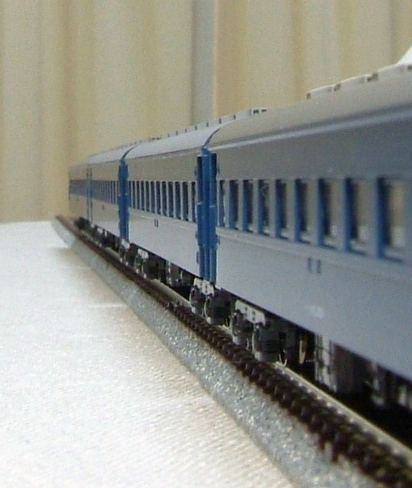

|
相変わらずの間違い探しシリーズです。 右がKATOのスハフ42そのまま、左がオハフ45です。 鋼板屋根ですので、キャンバス止めがありません。 で、キャンバス止めを削るついでに手すりを植え込みにしました。 |
| オハ46。 |
| オハフ45。 |
|  |
鋼板屋根の車両ですので、雨樋は細い金属樋となります。 元の2段雨樋を削った上で、0.2mmプラ板から切り出した雨樋を接着しました。 10系客車と同じ太さのはずですが、この太さが限界。 スハ43と連結して側面から見ると雨どいの違いが分かり満足です。 |
| 屋根はライトグレー(ねずみ色一号)で塗装しました。 |